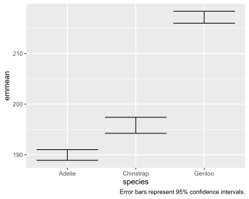
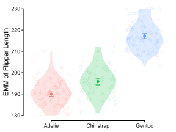
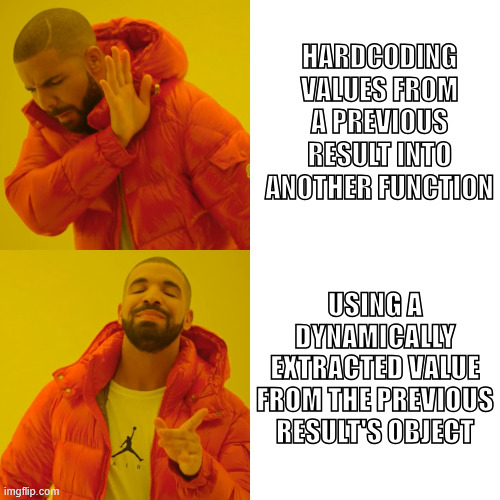
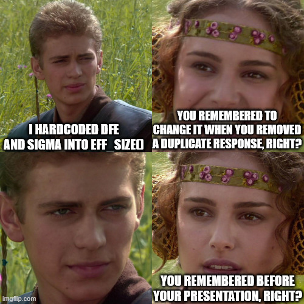
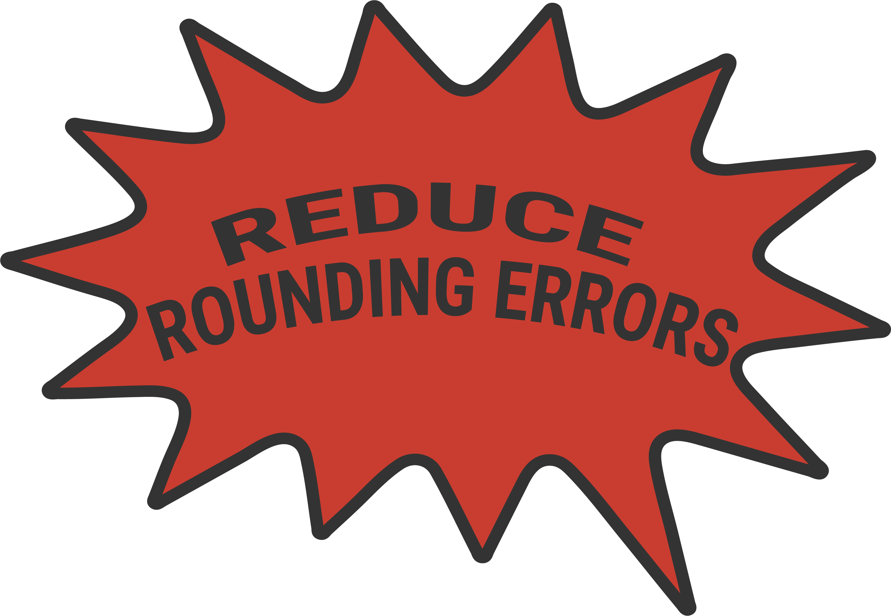
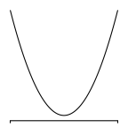
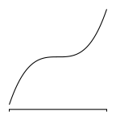

species emmean SE df lower.CL upper.CL
Adelie 190 0.540 339 189 191
Chinstrap 196 0.805 339 194 197
Gentoo 217 0.599 339 216 218
Confidence level used: 0.95 Estimated Marginal Means with emmeans
PSYC 6019-A01 / PSYC 6022-A01
2026-10-23 | Lab 9
Jess Helmer
Outline
emmeanswith One-Way ANOVAPairwise comparisons
Contrasts
One-Way ANOVA emmeans
Estimated Marginal Means
EMMs, also known as “least-squares means”
For a One-Way ANOVA, this is the same as just looking at the means of our groups.
○ Will get a bit more complicated with more than just one factor…
Useful to report with your ANOVA results to actually see the differences between means.
Estimated Marginal Means
Remember those interpretations of slope parameters?
Dummy coding compares \(g-1\) groups to \(\beta_0 =\) reference group mean:
| Predictor | \(g_1\) | \(g_2\) | \(\cdots\) | \(g_{G-1}\) | \(g_G\) |
|---|---|---|---|---|---|
| \(x_1\) | 1 | 0 | \(\cdots\) | 0 | 0 |
| \(x_2\) | 0 | 1 | \(\cdots\) | 0 | 0 |
| \(\vdots\) | \(\vdots\) | \(\vdots\) | \(\ddots\) | \(\vdots\) | \(\vdots\) |
| \(x_{G-1}\) | 0 | 0 | \(\cdots\) | 1 | 0 |
Dummy coding:
- \(\beta_0: = \mu_3\)
- \(\beta_1: = \mu_{1} - \mu_3\)
- \(\beta_2: = \mu_{2} - \mu_3\)
Effects or contrast coding compares \(g-1\) groups to \(\beta_0 =\) grand mean:
| Predictor | \(g_1\) | \(g_2\) | \(\cdots\) | \(g_{G-1}\) | \(g_G\) |
|---|---|---|---|---|---|
| \(x_1\) | 1 | 0 | \(\cdots\) | 0 | -1 |
| \(x_2\) | 0 | 1 | \(\cdots\) | 0 | -1 |
| \(\vdots\) | \(\vdots\) | \(\vdots\) | \(\ddots\) | \(\vdots\) | \(\vdots\) |
| \(x_{G-1}\) | 0 | 0 | \(\cdots\) | 1 | -1 |
Contrast/Effects coding:
- \(\beta_0: = \mu\)
- \(\beta_1: = \mu_{1} - \mu\)
- \(\beta_2: = \mu_{2} - \mu\)
Compares groups to grand mean
The means calculated from the slope parameters are the Estimated Marginal Means (EMMs).
One-Way ANOVA
Recall from last time…
library(palmerpenguins)
penguins_cleaned <- penguins |>
filter_out(when_any(is.na(flipper_length_mm), is.na(species)))
flipper_model <- aov(flipper_length_mm ~ species, data = penguins_cleaned)
flipper_model_lm <- lm(flipper_length_mm ~ species, data = penguins_cleaned)
summary(flipper_model); summary(flipper_model_lm) Df Sum Sq Mean Sq F value Pr(>F)
species 2 52473 26237 594.8 <2e-16 ***
Residuals 339 14953 44
---
Signif. codes: 0 '***' 0.001 '**' 0.01 '*' 0.05 '.' 0.1 ' ' 1
Call:
lm(formula = flipper_length_mm ~ species, data = penguins_cleaned)
Residuals:
Min 1Q Median 3Q Max
-17.9536 -4.8235 0.0464 4.8130 20.0464
Coefficients:
Estimate Std. Error t value Pr(>|t|)
(Intercept) 189.9536 0.5405 351.454 < 2e-16 ***
speciesChinstrap 5.8699 0.9699 6.052 3.79e-09 ***
speciesGentoo 27.2333 0.8067 33.760 < 2e-16 ***
---
Signif. codes: 0 '***' 0.001 '**' 0.01 '*' 0.05 '.' 0.1 ' ' 1
Residual standard error: 6.642 on 339 degrees of freedom
Multiple R-squared: 0.7782, Adjusted R-squared: 0.7769
F-statistic: 594.8 on 2 and 339 DF, p-value: < 2.2e-16Let’s get the estimated marginal means of penguin flipper length by species!
EMMs in R
To obtain the EMMs for some linear model:
emmeans::emmeans(model, specs)
○ specs = predictors for which you want estimated marginal means
emmeans and pipes |>
While we often want to use pipes in our R code, and e.g., might want to plot the EMMs from emmeans, the developers explicitly recommend to always manually check the output of the emmeans function! They provide annotations and context that we will lose if we immediately pipe it into something else (e.g., emmeans(model, specs) |> as_tibble())
One-Way ANOVA emmeans
Plotting One-Way emmeans

Plotting One-Way emmeans
Returns a ggplot, so you can work with it from there.
But don’t have muchhh control over the geometries (geoms) or mapping (mapping = aes()).
Feel free to check out the documentation at rvlenth.github.io/emmeans/reference/plot.html
Plotting One-Way emmeans
Can also easily make ourselves by converting the emmeans object into a tibble (again, after we’ve looked at it ourselves!)
emms_flipper_df <- as_tibble(emms_flipper)
emms_flipper_df |>
glimpse()Rows: 3
Columns: 6
$ species <fct> Adelie, Chinstrap, Gentoo
$ emmean <dbl> 189.9536, 195.8235, 217.1870
$ SE <dbl> 0.5404799, 0.8054037, 0.5988465
$ df <dbl> 339, 339, 339
$ lower.CL <dbl> 188.8905, 194.2393, 216.0091
$ upper.CL <dbl> 191.0168, 197.4077, 218.3649If plotting point estimates, we always want to include our uncertainty.

Plotting One-Way emmeans
geom_errorbar(mapping = aes(x, ymin, ymax), width = 0.9)
○ Alternatively, can specify aes(y, xmin, xmin) to flip the other way
○ width = width of error bar, may want to shrink width below its default
Plotting One-Way emmeans
Can layer geom_point on top, tidy up
○ geom_point will need a y aes (or x if it’s flipped)
Plotting EMMs is one of those places where you’ll see some crunched-up scales that visually exaggerate the size of the effect. This is a good time to consider how you’ll set your axis limits!

emms_flipper_df |>
ggplot(aes(x = species, y = emmean, ymin = lower.CL, ymax = upper.CL,
color = species)) +
geom_errorbar(width = 0.1) +
geom_point() +
scale_y_continuous("EMM of Flipper Length", limits = c(180, 230)) +
guides(x = guide_axis(NULL, cap = T),
y = guide_axis(cap = T)) +
theme_classic() +
theme(legend.position = "none")Plotting One-Way emmeans
Or add in the original data too…

emms_flipper_df |>
ggplot(aes(x = species, y = emmean, ymin = lower.CL, ymax = upper.CL,
color = species)) +
geom_violin(data = penguins_cleaned,
aes(x = species, y = flipper_length_mm, fill = species),
alpha = 0.2, color = NA,
inherit.aes = F) +
geom_jitter(data = penguins_cleaned,
aes(x = species, y = flipper_length_mm, color = species),
alpha = 0.15, shape = 21, size = 1.5,
inherit.aes = F) +
geom_errorbar(width = 0.1) +
geom_point() +
scale_y_continuous("EMM of Flipper Length", limits = c(180, 230)) +
guides(x = guide_axis(NULL, cap = T),
y = guide_axis(cap = T)) +
theme_classic() +
theme(legend.position = "none")Pairwise Comparisons
pairs(emmeans_object, adjust = "tukey")
○ Equivalent to emmeans::contrast(emmeans_object, method = "pairwise)
○ adjust = can supply name of adjustment
pairs(emms_flipper) contrast estimate SE df t.ratio p.value
Adelie - Chinstrap -5.87 0.970 339 -6.052 <0.0001
Adelie - Gentoo -27.23 0.807 339 -33.760 <0.0001
Chinstrap - Gentoo -21.36 1.000 339 -21.286 <0.0001
P value adjustment: tukey method for comparing a family of 3 estimates pairs(emms_flipper, adjust = "bonf") contrast estimate SE df t.ratio p.value
Adelie - Chinstrap -5.87 0.970 339 -6.052 <0.0001
Adelie - Gentoo -27.23 0.807 339 -33.760 <0.0001
Chinstrap - Gentoo -21.36 1.000 339 -21.286 <0.0001
P value adjustment: bonferroni method for 3 tests pairs(emms_flipper, adjust = "holm") contrast estimate SE df t.ratio p.value
Adelie - Chinstrap -5.87 0.970 339 -6.052 <0.0001
Adelie - Gentoo -27.23 0.807 339 -33.760 <0.0001
Chinstrap - Gentoo -21.36 1.000 339 -21.286 <0.0001
P value adjustment: holm method for 3 tests Effect Size
summary(flipper_model) Df Sum Sq Mean Sq F value Pr(>F)
species 2 52473 26237 594.8 <2e-16 ***
Residuals 339 14953 44
---
Signif. codes: 0 '***' 0.001 '**' 0.01 '*' 0.05 '.' 0.1 ' ' 1 contrast effect.size SE df lower.CL upper.CL
Adelie - Chinstrap -0.885 0.150 339 -1.18 -0.59
Adelie - Gentoo -4.106 0.199 339 -4.50 -3.71
Chinstrap - Gentoo -3.221 0.195 339 -3.61 -2.84
sigma used for effect sizes: 6.633
Confidence level used: 0.95 Here, edf and sigma are hardcoded: we manually inputted those numbers, and they won’t update if we adjust something upstream.
Avoid Hardcoding! Boo!


Effect Size: Dynamically
flipper_model_tidy <- broom::tidy(flipper_model)
flipper_model_tidy# A tibble: 2 × 6
term df sumsq meansq statistic p.value
<chr> <dbl> <dbl> <dbl> <dbl> <dbl>
1 species 2 52473. 26237. 595. 1.35e-111
2 Residuals 339 14953. 44.1 NA NA contrast effect.size SE df lower.CL upper.CL
Adelie - Chinstrap -0.884 0.150 339 -1.18 -0.589
Adelie - Gentoo -4.100 0.199 339 -4.49 -3.709
Chinstrap - Gentoo -3.217 0.195 339 -3.60 -2.833
sigma used for effect sizes: 6.642
Confidence level used: 0.95 
Nice Tables
The gt package can make excellent tables!
| species | emmean | SE | df | lower.CL | upper.CL |
|---|---|---|---|---|---|
| Adelie | 189.9536 | 0.5404799 | 339 | 188.8905 | 191.0168 |
| Chinstrap | 195.8235 | 0.8054037 | 339 | 194.2393 | 197.4077 |
| Gentoo | 217.1870 | 0.5988465 | 339 | 216.0091 | 218.3649 |
Check out the gt documentation for more information!
Nice Tables
The gt package can make excellent tables!
| Estimated Marginal Means of Flipper Length | |||||
| by Penguin Species | |||||
| Species | EMM | SE | DF | CI 2.5% | CI 97.5% |
|---|---|---|---|---|---|
| Adelie | 189.95 | 0.54 | 339 | 188.89 | 191.02 |
| Chinstrap | 195.82 | 0.81 | 339 | 194.24 | 197.41 |
| Gentoo | 217.19 | 0.60 | 339 | 216.01 | 218.36 |
emms_flipper |>
as_tibble() |>
gt() |>
fmt_number() |> # takes everything to two decimal places
fmt_number(columns = df, decimals = 0) |> # takes df specifically to 0 decimal places
cols_label_with(columns = species, fn = str_to_title) |> # title case species column
cols_label(
emmean ~ "EMM", # relabel other columns
SE ~ "SE", # specify names with their name from the dataframe columns
df = "DF",
lower.CL = "CI 2.5%",
upper.CL = "CI 97.5%"
) |>
tab_style(style = cell_text(weight = "bold"), # make the column headers bold
locations = cells_column_labels())Check out the gt documentation for more information!
Contrasts
Contrasts are like custom pairwise comparisons. Can examine differences between two groups… or sets of groups.
Typically specify a priori (planned before data collection), and often have some theoretical reason for doing that contrast
Setting up a Linear Contrast I
Maybe you as a researcher are very interested in Gentoo penguins. You want to compare Gentoo penguins to all other penguin species.
Setting up a Linear Contrast I
Species means from the palmerpenguins data
Gentoo Adelie Chinstrap
+ Gentoo
− Adelie Chinstrap
+ \(1\) = \(1\)
− \(1\) + \(1\) = \(-2\)
+ \(\tfrac{1}{1}\) = \(1\)
− \(\tfrac{1}{2}\) + \(\tfrac{1}{2}\) = \(-1\)
\(H_0\): \((1)\,\mu_{\text{Gentoo}}\) + \(\left(-\tfrac{1}{2}\right)\mu_{\text{Adelie}}\) + \(\left(-\tfrac{1}{2}\right)\mu_{\text{Chinstrap}}\) = \(0\)
First, here are all of the groups laid out. These represent every we could include in our comparison.
Next, ask: which group, or groups, do I want to compare? If a side contains several groups, they are weighted equally within the comparison. Here, we plan to compare Gentoo penguins with the average of Adelie and Chinstrap penguins. Which side is positive and which is negative is arbitrary; it only affects interpretation.
Now we need the weights on each side to balance, so that everything sums to zero across the selected groups. Right now there is 1 mean on the positive side and 2 on the negative side. If we give every group a weight of 1, the positive side adds up to \(1\) and the negative side to \(-2\).
If we divide each side by its total, each side sums to \(1\) or \(-1\), so the two sides now balance.
Our null hypothesis is then that there is no difference between the two sides: the difference between them is zero.
Testing a Linear Contrast I
\[ \psi_1 = (1) \ \mu_\text{Gentoo} \ + \ (-\frac{1}{2}) \ \mu_\text{Adelie} \ + \ (-\frac{1}{2}) \ \mu_\text{Chinstrap}\]
Hypotheses:
\(H_0: \psi_1 = 0\)
\(H_A: \psi_1 \neq 0\)
Testing a Linear Contrast I
emms_flipper species emmean SE df lower.CL upper.CL
Adelie 190 0.540 339 189 191
Chinstrap 196 0.805 339 194 197
Gentoo 217 0.599 339 216 218
Confidence level used: 0.95 levels(penguins_cleaned$species) # what order are they in?[1] "Adelie" "Chinstrap" "Gentoo" contrast estimate SE df t.ratio p.value
gentoo_vs_others 24.3 0.771 339 31.532 <0.0001Setting up a Linear Contrast II
You don’t have to include all groups in a contrasts’ comparison.
“Zero-out” a group in a contrast equation by setting its weight to zero.
For example, let’s just compare Gentoo penguins to Adelie penguins.
Setting up a Linear Contrast II
Just comparing Gentoo and Adelie penguins.
Gentoo Adelie Chinstrap
+ Gentoo
− Adelie
0 Chinstrap
+ \(1\) = \(1\)
− \(1\) = \(-1\)
0 \(0\) = \(0\)
\(H_0\): \((1)\,\mu_{\text{Gentoo}}\) + \((-1)\,\mu_{\text{Adelie}}\) + \((0)\,\mu_{\text{Chinstrap}}\) = \(0\)
[We still have all the groups available to us, but this time we only want to compare Gentoo and Adelie]
To do this, Chinstrap gets “zero-ed out”. We will assign it a weight of zero.
Since Chinstrap’s coefficient is zero, we don’t have to consider it in our “sum to zero” constraint.
We only have one group on each (positive / negative) side, so we don’t have to divide here. Implicitly, we are dividing each by one.
Testing a Linear Contrast II
\[ \begin{aligned} \psi_2 &= (1) \ \mu_\text{Gentoo} \ + \ (-1) \ \mu_\text{Adelie} \ + \ (0) \ \mu_\text{Chinstrap} \\ &= (1) \ \mu_\text{Gentoo} \ + \ (-1) \ \mu_\text{Adelie} \\ &= \mu_\text{Gentoo} - \mu_\text{Adelie} \end{aligned} \]
Hypotheses:
\(H_0: \psi_2 = 0\)
\(H_A: \psi_2 \neq 0\)
Testing a Linear Contrast II
emms_flipper species emmean SE df lower.CL upper.CL
Adelie 190 0.540 339 189 191
Chinstrap 196 0.805 339 194 197
Gentoo 217 0.599 339 216 218
Confidence level used: 0.95 contrast estimate SE df t.ratio p.value
gentoo_vs_others 27.2 0.807 339 33.760 <0.0001Polynomial Contrasts
If your groups have some natural ordering and equal intervals between levels, you may also be interested in testing a polynomial contrast.
Polynomial contrasts tests for polynomial relationships in the outcome. If you have \(J\) groups, you can test for \(J-1\) polynomial contrasts, e.g.,
Linear (\(J \geq2\))
\(y = \beta_0 + \beta_1x\)

Quadratic (\(J \geq 3\))
\(y = \beta_0 + \beta_1x + \beta_2x^2\)

Cubic (\(J \geq 4\))
\(y = \beta_0 + \beta_1x + \beta_2x^2 + \beta_3x^3\)

Polynomial Contrasts
Polynomial contrasts use pre-specified weights for each term (\(x\), \(x^2\), \(x^3\), etc.), e.g.,
| Polynomial Contrast Weights | ||||||||
| Number of treatments | Degree of polynomial |
Treatment totals
|
Divisor \(k = \sum \text{weight}_i^2\) |
|||||
|---|---|---|---|---|---|---|---|---|
| T1 | T2 | T3 | T4 | T5 | T6 | |||
| 2 | 1 | −1 | +1 | 2 | ||||
| 3 | 1 | −1 | 0 | +1 | 2 | |||
| 2 | +1 | −2 | +1 | 6 | ||||
| 4 | 1 | −3 | −1 | +1 | +3 | 20 | ||
| 2 | +1 | −1 | −1 | +1 | 4 | |||
| 3 | −1 | +3 | −3 | +1 | 20 | |||
| 5 | 1 | −2 | −1 | 0 | +1 | +2 | 10 | |
| 2 | +2 | −1 | −2 | −1 | +2 | 14 | ||
| 3 | −1 | +2 | 0 | −2 | +1 | 10 | ||
| 4 | +1 | −4 | +6 | −4 | +1 | 70 | ||
(You do not have to know these)
Adapted from rcompanion’s Orthogonal Polynomial Contrasts handout
Polynomial Contrasts
For example, we can examine the effect of year of measurement on flipper length.
We have three groups (year = 2007, 2008, 2009), with ordered, equal spaced intervals between groups, so we can fit a linear and quadratic contrast.
Call:
lm(formula = body_mass_g ~ year, data = penguins_year_data)
Residuals:
Min 1Q Median 3Q Max
-1566.7 -666.7 -174.5 547.8 2175.5
Coefficients:
Estimate Std. Error t value Pr(>|t|)
(Intercept) 4200.50 43.41 96.770 <2e-16 ***
year.L 60.64 75.21 0.806 0.421
year.Q -81.04 75.16 -1.078 0.282
---
Signif. codes: 0 '***' 0.001 '**' 0.01 '*' 0.05 '.' 0.1 ' ' 1
Residual standard error: 802.2 on 339 degrees of freedom
(2 observations deleted due to missingness)
Multiple R-squared: 0.005193, Adjusted R-squared: -0.000676
F-statistic: 0.8848 on 2 and 339 DF, p-value: 0.4137emms_year <- emmeans(year_model, specs = "year")
emms_year year emmean SE df lower.CL upper.CL
2007 4125 76.8 339 3973 4276
2008 4267 75.1 339 4119 4414
2009 4210 73.5 339 4066 4355
Confidence level used: 0.95 contrast(emms_year, method = "poly") contrast estimate SE df t.ratio p.value
linear 85.8 106 339 0.806 0.4207
quadratic -198.5 184 339 -1.078 0.2817Polynomial Contrasts
From Mark’s Lecture 12: The Model Based Perspective, Slide 44 accessed on 2026-10-17